11.8.4 Dimensions in DQL
In a pseudo table in use, some fields are likely to be used as foreign key fields that will relate to the primary key of a certain table. Such a table associated to one or part of the foreign key is called dimension table. In the dimension table, primary key field must be unique and the foreign key field associated to it is called dimension field. During DQL configurations, if a dimension table is linked to the dimension field of another table, the dimension table must be loaded into the memory, like the following seller information table:
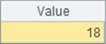
Data in pseudo table sellers also comes from emps.ctx. We need to select ¡°Load into memory¡± to load sellers into the memory and uses it as the dimension table. Only EID, DeptID and Name fields are selected and the other fields are discarded with filter condition DeptID==1 used to get employees working in the Sales department only. After the dimension table is defined, set it as a DQL table as follows:
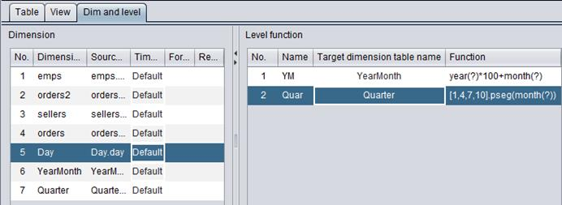
Query data in sellers table in DQL query window:
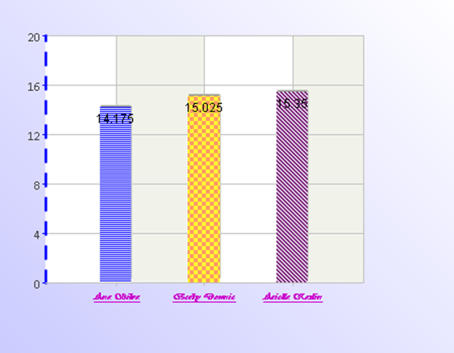
The dimension table just contains sellers information and retains useful fields only.
On Pseudo table tab, after setting the dimension table as an in-memory table we can associate it to the foreign key of another pseudo table. In the following interface, we change the configurations of var_orders and add a foreign key field under the user-defined field:
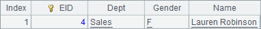
The newly-added foreign key field in the pseudo table will associate to dimension table var_sellers through SID.
Now pseudo table var_orders¡¯s definition is changed. In the DQL table definition, delete definition of the original table orders and generate the DQL table according to the modified pseudo t able definition. Foreign key settings are added to orders:

The foreign key settings are consistent with the foreign key field settings in the pseudo table. The foreign key field SID is associated with dimension table sellers, and EID is the dimension table¡¯s EID. After the foreign key is set for a DQL table, we can directly query the foreign key field on DQL query tab, as shown below:
By setting the foreign key for a DQL table, we can query F field in the dimension table corresponding to the foreign key fk in DQL query tab using syntax fk.F. For example:
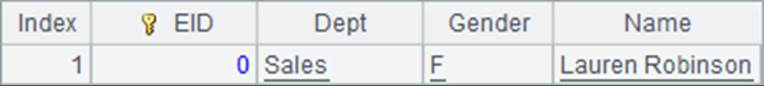
The above DQL table invokes sellers¡¯ names thourgh SID.Name. In more occasions, the table¡¯s foreign key is used to perform a filtering. For example:
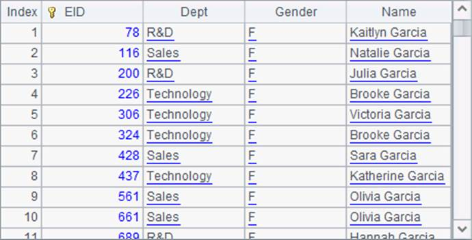
On the DQL settings window¡¯s Dim and level page, we can view all DQL tables¡¯ all dimension tables and dimension hierarchies:
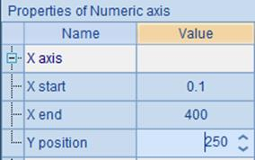
A dimension table can be simply called dimension. Any table whose primary key field contains unique values and does not act as the foreign key can be a dimension table. Besides the sellers table, the other DQL tables, such as emps, orders2 and orders, also meet the dimension table standard for being related to orders table¡¯s foreign key and are thus listed in the dimension list.
In the above example displaying how a dimension table is used, the sellers table is real. In addition to the physically existed tables, we can use the physically nonexistent but logically designed tables as dimension tables. We call such tables logical tables and often use them for date handling.
On DQL¡¯s Table tab, we add several date-related logical tables. Select Edit->Add logical table on the menu bar to add a logical table definition:
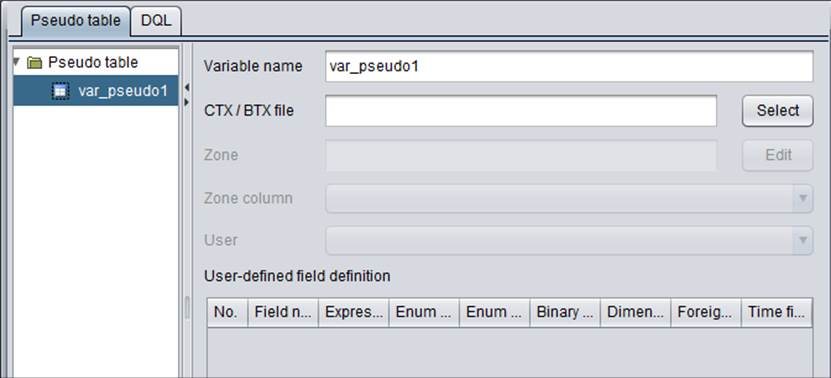
The new logical table is named Day. Click ¡°Add¡± icon 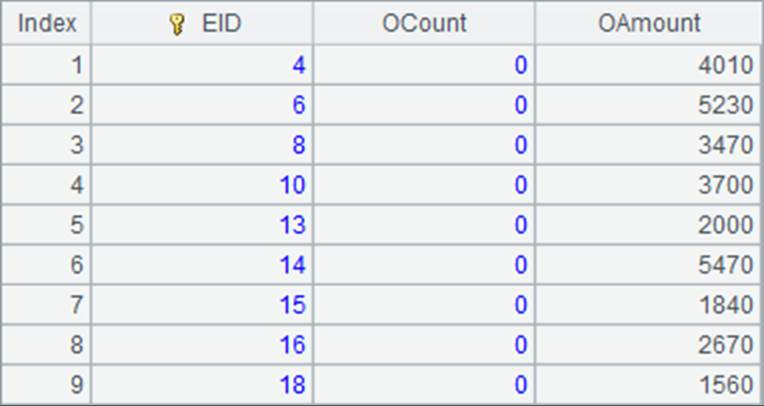 to add a field definition. The field is defined as day:
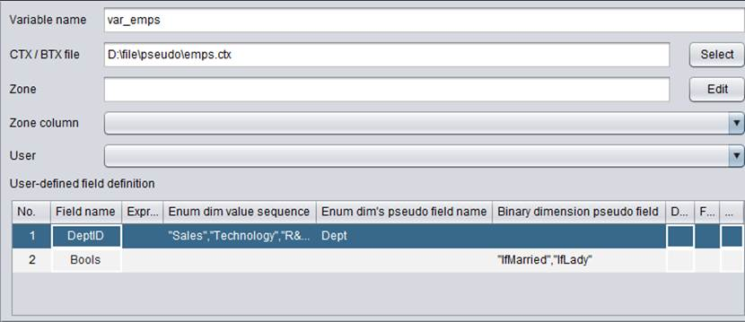
Only one primary key field can be defined for a logical table. A logical table amounts to a table containing only one field. Default is selected for the data type of our date-related logical table. Actually, the logical table will be related to a datetime type field. That is to say, logical table Day¡¯s field type is date. We call such type of logical tables date dimensions. On the DQL table definition window, logical tables have different icons from other DQL tables.
Now we add another two logical tables – YearMonth and Quarter and use them as time-related dimension tables – the YearMonth dimension and Quarter dimension:
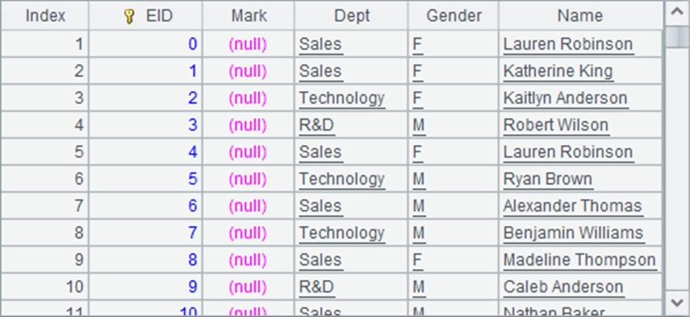
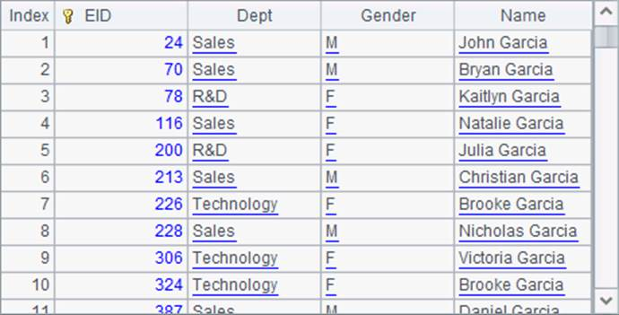
The YearMonth table is used to store the year part and month part of date values, and the Quarter table will store quarters that dates belong to. Data types of both dimension tables are integers, and we call them integer dimension.
Since all the three logical tables store time data, they are intrinsically related to each other. Based on Day we can get the year, month and quarter which a date belongs to; based on YearMonth we can find which quarter a month falls in. We can represent their associated relationship through a function. On a dimension table, if it can be linked to another dimension through the calculation of a function, we call the function hierarchy function. We add a hierarchy function to dimension table Day and set association relationships between it and the other two time dimension tables:
On DQL table definition¡¯s Dime and level tab, we set different names for hierarchy functions and their primary key associations with selected dimension tables respectively. In a hierarchy function, we use the question mark (?) to represent a primary key value in the current dimension table. We can get data on different levels, corresponding to YearMonth dimension table or Quarter dimension table, by handling date data through the hierarchy function. A hierarchy function is not bi-directional. We can find the corresponding quarter for a date but cannot get date according to a quarter value. Likewise, we set the association between YearMonth dimension table and Quarter dimension table¡¯s hierarchy function:
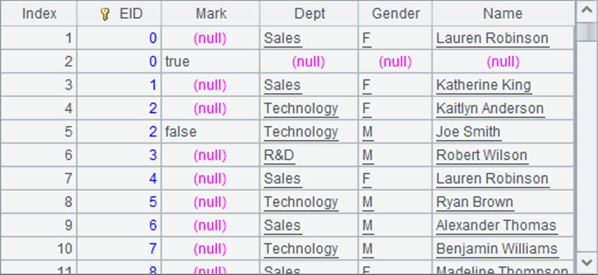
In the following window, we add the association relationship between orders table and date dimension Day in the former¡¯s foreign key settings: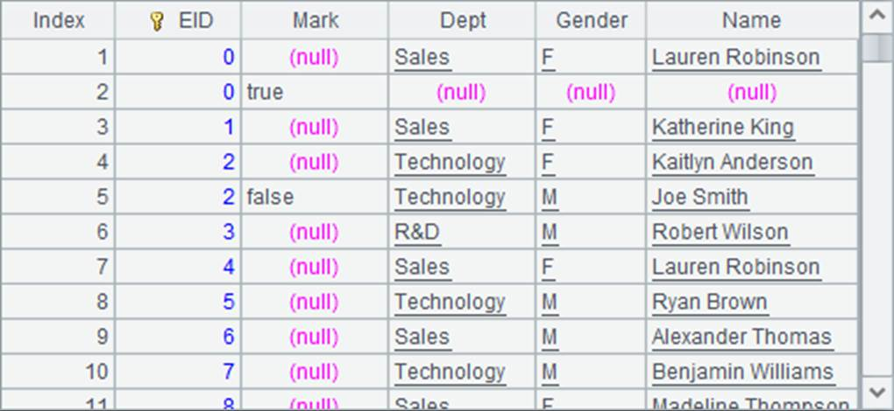
In orders table, we add a new foreign key fk1 that relates to dimension table Day through the former¡¯s OTime field and the lattter¡¯s primary key day. By doing so, orders table becomes associated to the other date-related dimension tables – YearMonth and Quarter via Day¡¯s hierarchy function, which can be used in DQL queries. For example:
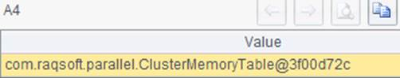
Through the hierarchy-function-based association, OTime¡¯s date data get associated with YearMonth dimension table and we can obtain data of the latter¡¯ ym field. In queries, we use OTime#ym to represent that the values of associated field ym is obtained through the hierarchy function linked to OTime.
We can also use a multilevel dimension to perform data filtering, to get order records of the second quarter, for example:
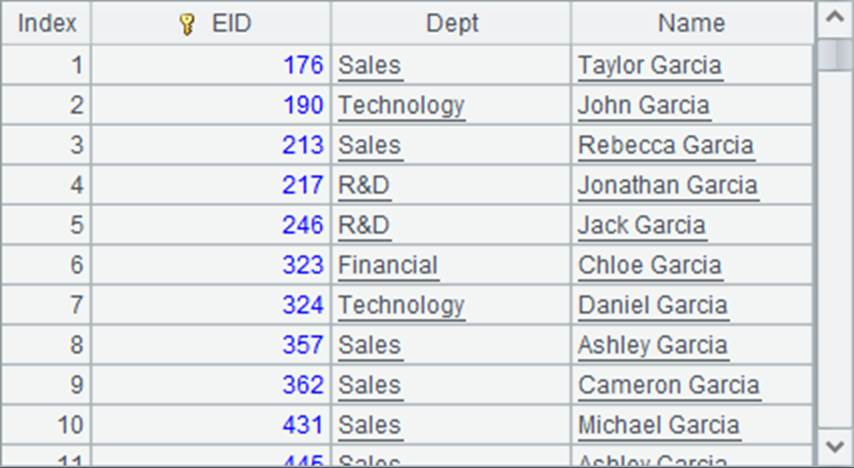
By exploiting dimensions in DQL tables, we can make great use of table data and meet more real-world business requirements. One dimension table can relate to foreign keys of multiple tables, and it is convenient to use a dimension table¡¯s hierarchy function. Take the above date-related dimension as an example, we can get data on different levels by creating association between a datetime foreign key and a date dimension table.